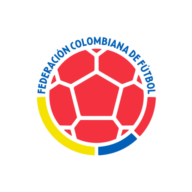

NOTICIA 1 DE 6 · 17 NOV 2026
Fotografía: Fotografía oficial de la Presidencia de Colombia · Public domain · origen y licencia. Imagen de contexto documental.
¡Colombia juega contra Chile esta noche!
La selección Colombia disputa esta noche un amistoso contra Chile a partir de las seis, hora de Colombia. La Federación confirmó el encuentro y el cambio de escenario a Santiago. Sigue los resultados en su canal oficial.

FEDERACIÓN COLOMBIANA DE FÚTBOLFuente original y ampliación BOGOTÁ.GOV.CO
BOGOTÁ.GOV.CO REUTERS
REUTERS